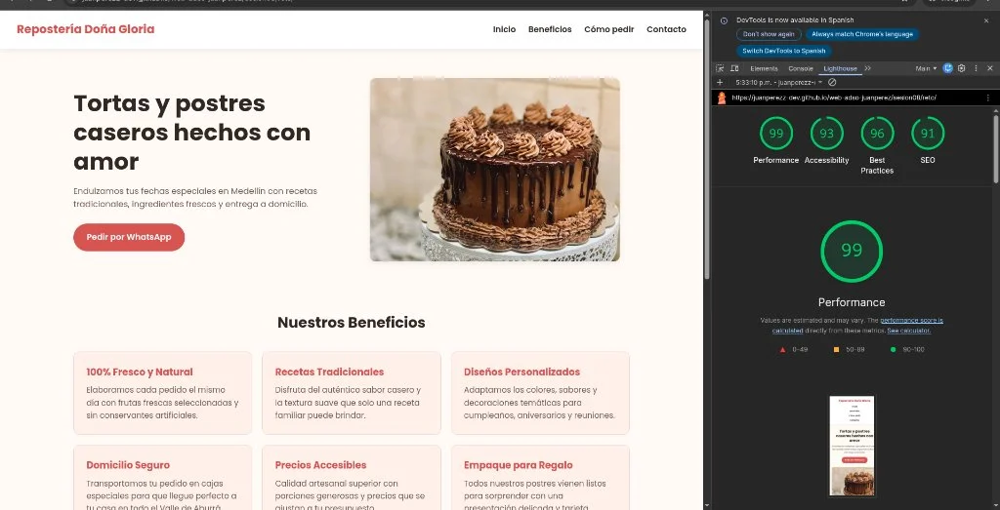
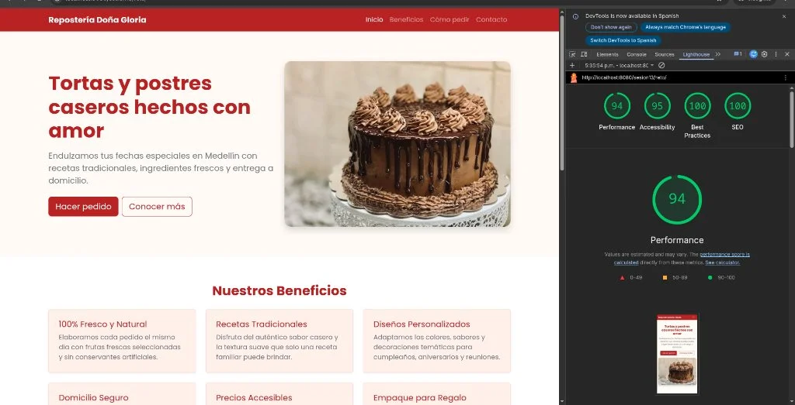

Sesión 8 (CSS propio)



| Criterio | Sesión 8 (CSS propio) | Sesión 13 (Bootstrap) |
|---|---|---|
| Puntaje de Rendimiento | 99 | 94 |
| Accesibilidad | 93 | 95 |
| Buenas prácticas | 96 | 100 |
| SEO | 91 | 100 |
| Líneas de CSS escritas | 282 líneas | 65 líneas |
| Qué tan única se ve | Muy única (diseño propio a la medida) | Estándar (aspecto típico de Bootstrap) |
| Qué tan fácil fue hacerla responsive | Difícil (requiere media queries manuales) | Muy fácil (utilidades col y row en el HTML) |
Para el proyecto final usaremos nuestro propio kit de estilos. Aunque Bootstrap ahorra tiempo al hacer la página responsive y montar componentes rápidos, nuestro propio kit nos permite tener un diseño único que no parece una plantilla, nos da un rendimiento de 99 sin cargar librerías pesadas que no usamos, y nos ayuda a aplicar directamente lo aprendido en ADSO.